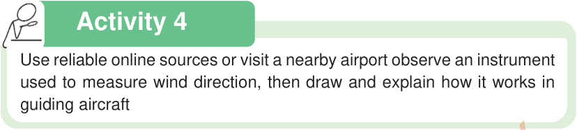

Geography and the Environment Pupil’s Book Standard Five

Activity 4
Use reliable online sources or visit a nearby airport observe an instrument used to measure wind direction, then draw and explain how it works in guiding aircraft